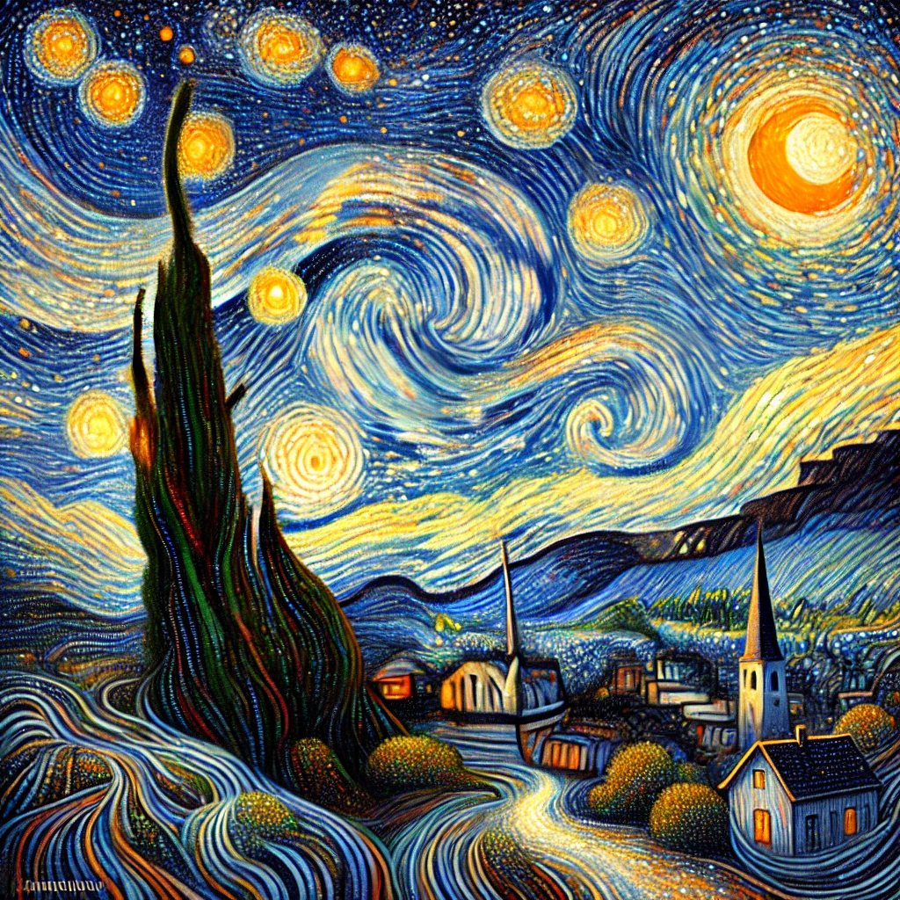
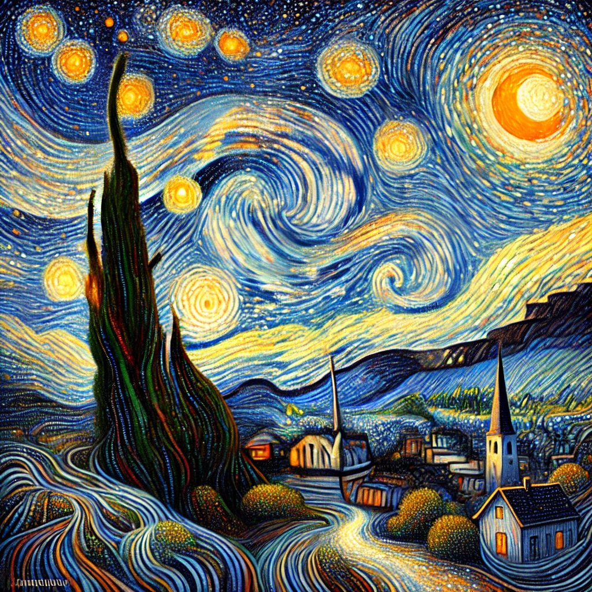

Final Art Project: How AI Understands Art and Images
Jacob Davis
Before I show you any images in this project, I would like to give you some context on what I did before you see it. I started off by choosing four images that resonate with me: Starry Night by Vincent Vangoh, Relativity by M.C. Escher, Revolver (one of The Beatles album covers) by Klaus Voormann, and Abraham Linclon’s face (i’ll explain later.) For the first three pieces of art, I did the following: (note: I will only show two images that both of the AI’s generated for each piece of art that I chose, even though I did generate more, I just want to show you the best and most relevant images.) I went to ChatGPT and first asked it to recreate the piece of art point blank, and if that did not work because of copyright reasons, I would ask it to recreate the art as best as it could without infringing on some copyright or another. Images that follow this criteria are the first ones shown under every category. Next, in my own words, I would describe the image as best as I could to see what it would generate, and how artistically creative this image might be. Images that follow this criteria are going to be shown after the first images. I then did this whole process again with another image generating AI called Leonardo. The last piece of art that I chose was Abraham Linclon, and I decided to test ChatGPT and its abilities to create images inside of Python Arrays, which had some interesting results. I was then inspired by the results that I got from ChatGPT to create my own Abraham Lincoln pixel art using a python array. I got some very interesting results while doing this project and I had a lot of fun doing it, so enjoy!
Part 1: Recreating a very well known piece of Art (or) ChatGPT Plagiarizing
“Starry Night” by: Vincent Vangoh:
ChatGPT’s versions:
Leonardo’s versions:
I really enjoyed seeing what ChatGPT did with the prompts that I gave it for this piece, and I would say that it captured the feeling of Vangoh’s art pretty well, but there is still room for improvement. You can see that the AI reproduced certain patterns in the piece pretty well. I think that the things it did best were the swirls in the center of the sky, the warm crescent moon, the tall and twisted tree, and the glowing stars. The second ChatGPT image that is shown above was produced using just my description of Starry Night without using keywords like night, star, or Vangoh, which would make it too easy for the AI to simply guess that I wanted something like Starry Night, and not have to be creative. You can see that this didn’t really work, because the image looks unexpectedly too much like Vangoh’s original painting, which means that ChatGPT plagiarized (foreshadowing.) This image also generated two churches in every example, even though I only asked for one.
As for Leonardo’s take on this art piece, I would say that these two images were two of the best images that Leonardo generated for me. The first image is my favorite reimagining of Starry Night. I appreciate how detailed this image is, and unlike ChatGPT, if you look closer at the image, you can see that the AI gave the image paint texture and brush strokes. It didn’t exactly capture Vangogh’s distinct style, but I’m still pretty impressed. As for the second image, it’s kind of a mixed bag. I don’t think that it captured the feeling of Vangogh’s image practically at all, with the landscape feeling flat, and everything else feeling sort of generic. One good thing I can say about this is that unlike ChatGPT, Leonardo did not get a close enough description of starry night and then take the lazy and uncreative path of plagiarization, so bonus points for Leonardo on both of these images.
Part 2: Recreating a lesser known piece of art (or) Pushing AI’s Comfort Level
“Relativity” by: M. C. Escher:
ChatGPT’s versions:
Leonardo’s versions:
I would like to start off my analysis of these recreations by saying that I don’t think that either one of the AI’s knows of M. C. Escher’s Relativity, so the results of these images are probably some of the most creative and disappointing recreations in this presentation. Starting off with ChatGPT’s images, I think it’s fair to say that it understood the instructions quite a bit better than Leonardo did. I would say that ChatGPT’s second image was by far my favorite, in spite of the fact that it wasn’t able to put the people walking on surfaces that should not be possible by the laws of gravity. That was a common theme when I was trying to generate images for this piece of art, and I think the reason for this is that these image generating AI’s are trained in such a way that they will only generate people who stand the right way up. I think that this is overall a positive thing, but in this specific instance it created some trouble for me. I would say that overall, ChatGPT did well in capturing the surreal and liminal space feeling of M. C. Escher’s work, but it was unable to put the people where I needed them to be.
Leonardo came up with some pretty interesting results with the prompts that I gave it, which I have mixed feelings about. On one hand, they capture some of the feeling that M. C. Escher drawings carry, but on the other hand they strayed so far away from what I was asking of it, (like in the first image) that I don’t know where it was getting its inspiration from. Starting with the first image, it’s colorful, which is a very interesting choice, so I'm thinking that Leonardo does not know what “Relativity” looks like at all, but I will say that this image does capture some feeling that other works by M. C. Escher carry. I will say that Leonardo’s second image was the only one that put a person on the ceiling, so I will give it some bonus points for that, but over all, it lacks the interesting layout that the original piece of art has, and I find it less creative than it could be. Overall, I think that both AI’s struggled with this one, but it’s interesting to see how they tried to overcome these obstacles.
Part 3: Trying to Avoid Copyright Infringement at all Cost (or) ChatGPT Plagiarizing Again
Revolver Album Cover by: Klaus Voormann:
ChatGPT’s versions:
Leonardo’s versions:
ChatGPT really surprised me on this one, and although it plagiarized big time, it did so very creatively. I first asked ChatGPT to recreate the Revolver album cover, and it rejected my request due to copyright. My first attempt at describing this piece of art is the image shown second, where I can say that ChatGPT really did well in creatively trying to fulfill my request. I was personally very impressed with this image in spite of the fact that it struggles to capture the feeling of the piece, but it gets pretty close and it looks pretty good if you ignore the fact that all the faces look almost exactly the same, and if you also ignore the ears. For the first ChatGPT image shown, I changed my prompt, and told it to add the word “REVOLVER” at the bottom which resulted in it making an almost exact copy of the original. All I can say is that my feelings are mixed, because it captures the feeling of the original pretty well, but you can tell that it got lazy with the minor details like the faces and figures mingled in the Beatles' hair. I’m disappointed in the fact that it plagiarized the art, but I can say that I am impressed with the result.
These two images from Leonardo are the best of the worst. No matter how hard I tried to explain the image to Leonardo, it would always come up with photo realistic images of the album cover instead of making it look hand drawn. When I told Leonardo to just recreate the Revolver album cover, believe it or not, it got worse. I think that this is because Leonardo has absolutely no clue what the Revolver album cover looks like, so it had to get creative, and creative it indeed got. After countless uncanny images of The Beatles holding guns, and images of just guns, I was able to come up with the first image you saw under the Leonardo caption, along with a few worse ones like it. Both of these images are pretty bad, but fortunately this is as bad as it got.
Part 4: Abraham Lincoln in a Python Array?
https://www.nytimes.com/2024/09/01/magazine/worthless-pennies-united-states-economy.html
This is a link to a New York Times article that talks about the negative effect of pennies on the economy. I am referring to it here because I learned from this article that Abraham Linclon’s face is the most reproduced piece of art in history because of the vast amounts of pennies that are minted every year, and the vast amounts of pennies that have been minted for the past hundred years or so. So in the spirit of this knowledge, I decided to partake in the tradition of making my own Abraham Lincoln art.
ChatGPT’s versions: (note: the first image you see was generated by ChatGPT like the rest of the ChatGPT images you have seen in this presentation, and the other three were generated by ChatGPT through a python array.)
Me!:
One day in class when we were working with arrays, I became curious about whether or not you can ask ChatGPT to generate images within Python Arrays. The images above are proof that you can, but they will be terrible. Needless to say, I was disappointed with the results that ChatGPT gave me, but it started to make me wonder why I got such bad results. So I asked ChatGPT how it creates its images, and the answer helped me understand why they were so bad. It basically said that when it creates images, it uses DALL-E, which is software that analyzes patterns based on an enormous amount of data that it has stored, and then it copies those patterns to basically draw its own images. It does not think of images pixel by pixel which is initially what I thought it did; this is the reason that ChatGPT fails so profoundly at making images in arrays.
This was good to know, but I still wasn’t satisfied with that answer, so I decided to make my own Abraham Lincoln pixel art. I started by finding inspiration for what I was going to do, so I did a google search for Abraham Linclon pixel art, and found a pinterest image that I drew a lot of inspiration from to make the first Abraham Lincoln image that you see. For the second image, I drew inspiration from ChatGPT’s Abraham Lincoln image that is shown above, but I did have to improvise quite a bit because the AI was not able to make the image into perfect pixels. Overall, I would say that AI is getting pretty good at analyzing patterns and creating images that are increasing in quality, but it has become abundantly clear to me in doing this project that, whereas AI seems human at times, at the end of the day it is still just computer software that has a lot of room for improvement.
Below are the two chunks of code that will show the two Abraham Lincoln images that I created. Feel free to copy and paste them and run them yourself. I know it probably doesn’t look pretty below, but I'm pretty sure it will format correctly when you paste it. Also feel free to be creative and change it up any way you like!
Abraham Lincoln #1
# Jacob C. Davis's Abraham Lincoln Code 1.0
import numpy as np
import matplotlib.pyplot as plt
# Create a simplified 2D array representing a pixelated image of Abraham Lincoln
# Define colors (RGB tuples)
b = (0, 0, 0)
g = (64, 64, 64)
l= (192, 192, 192)
w= (255, 255, 255)
#Define more RGB tuples to get more colors?
# Create an array of Abraham Lincoln's face
lincoln_image = np.array([
[w, w, w, w, w, w, b, b, b, b, w, w, w, w, w, w, w, w, w],
[w, w, w, w, b, b, b, b, b, b, b, b, w, w, w, w, w, w, w],
[w, w, w, b, b, b, b, b, b, b, b, b, b, b, w, w, w, w, w],
[w, w, b, b, b, b, b, b, b, b, b, b, b, b, w, w, w, w, w],
[w, w, b, b, b, b, b, b, l, l, b, b, b, b, b, w, w, w, w],
[w, b, b, b, b, b, w, w, w, w, w, w, b, b, b, b, w, w, w],
[w, b, b, b, w, w, w, w, w, w, w, w, b, b, b, b, w, w, w],
[b, b, b, w, w, w, w, w, w, w, w, w, b, b, b, b, b, w, w],
[b, b, b, w, w, w, w, w, w, w, w, w, b, b, b, b, b, w, w],
[b, b, b, w, w, w, w, w, w, w, w, w, b, b, b, b, b, w, w],
[w, b, b, b, w, w, b, b, b, g, w, w, b, b, b, g, w, w, w],
[w, b, b, b, b, w, w, b, b, g, w, w, b, b, b, w, w, l, w],
[w, w, b, g, l, w, w, l, l, w, w, w, b, w, g, w, b, w, w],
[w, w, b, g, w, w, w, w, w, w, w, w, b, w, w, w, l, w, w],
[w, w, g, g, w, w, w, w, w, w, g, g, b, w, w, w, w, w, w],
[w, w, b, g, b, b, w, w, w, g, g, g, b, w, w, b, w, w, w],
[w, w, w, b, g, w, w, w, w, g, w, w, b, b, b, w, w, w, w],
[w, w, w, b, g, w, w, w, w, w, w, w, b, b, b, w, w, w, w],
[w, w, b, b, b, g, w, w, w, b, b, b, b, b, w, w, w, w, w],
[w, w, b, b, b, b, b, b, b, b, b, b, w, w, w, w, w, w, w],
[w, w, w, b, b, b, b, b, b, b, b, w, w, b, b, w, w, w, w],
[w, w, w, w, b, b, b, b, b, b, w, w, w, b, b, w, w, w, w],
[w, w, w, w, w, g, g, g, g, w, w, w, w, b, b, b, w, w, w],
[w, w, w, b, b, b, b, b, w, w, w, w, b, b, b, b, w, w, w],
[w, w, w, b, b, b, b, b, b, b, b, b, b, b, b, b, b, b, w],
[w, w, b, b, b, b, b, b, b, b, b, b, b, b, b, b, b, b, b],
[b, b, b, b, b, b, g, g, b, b, b, b, b, b, b, b, b, b, b]
])
# Display the image
plt.imshow(lincoln_image)
plt.axis('off') # Turn off the axis
plt.show()
Abraham Lincoln #2
#Jacob C. Davis's Abraham Lincoln Code 2.0
import matplotlib.pyplot as plt
import numpy as np
# Define a simplified pixel array for Abraham Lincoln (black and white)
pixel_art = [
[5, 5, 5, 5, 5, 5, 5, 5, 5, 5, 5, 5, 5, 5, 5, 5, 5, 5, 5, 5, 5, 5, 5, 5, 5, 5, 5, 5, 5, 5, 5, 5, 5, 5, 5, 5, 5, 5, 5, 5, 5, 5, 5, 5, 5, 5, 5, 5, 5, 5, 5],
[5, 5, 5, 5, 5, 5, 5, 5, 5, 5, 5, 5, 5, 5, 5, 5, 5, 5, 5, 5, 5, 5, 5, 5, 5, 5, 5, 5, 5, 5, 5, 5, 5, 5, 5, 5, 5, 5, 5, 5, 5, 5, 5, 5, 5, 5, 5, 5, 5, 5, 5],
[5, 5, 5, 5, 5, 5, 5, 5, 5, 5, 5, 5, 5, 5, 5, 5, 5, 0, 0, 1, 0, 1, 2, 2, 1, 0, 0, 0, 0, 0, 0, 0, 0, 0, 5, 5, 5, 5, 5, 5, 5, 5, 5, 5, 5, 5, 5, 5, 5, 5, 5],
[5, 5, 5, 5, 5, 5, 5, 5, 5, 5, 5, 5, 5, 5, 5, 5, 0, 0, 0, 2, 0, 2, 2, 3, 2, 0, 0, 0, 0, 0, 0, 0, 0, 0, 0, 5, 5, 5, 5, 5, 5, 5, 5, 5, 5, 5, 5, 5, 5, 5, 5],
[5, 5, 5, 5, 5, 5, 5, 5, 5, 5, 5, 5, 5, 5, 5, 5, 0, 0, 0, 2, 0, 2, 3, 3, 2, 0, 0, 0, 0, 0, 0, 0, 0, 0, 0, 5, 5, 5, 5, 5, 5, 5, 5, 5, 5, 5, 5, 5, 5, 5, 5],
[5, 5, 5, 5, 5, 5, 5, 5, 5, 5, 5, 5, 5, 5, 5, 5, 0, 0, 0, 2, 0, 2, 3, 3, 2, 0, 0, 0, 0, 0, 0, 0, 0, 0, 0, 5, 5, 5, 5, 5, 5, 5, 5, 5, 5, 5, 5, 5, 5, 5, 5],
[5, 5, 5, 5, 5, 5, 5, 5, 5, 5, 5, 5, 5, 5, 5, 5, 0, 0, 0, 2, 0, 2, 3, 3, 2, 0, 0, 0, 0, 0, 0, 0, 0, 0, 0, 5, 5, 5, 5, 5, 5, 5, 5, 5, 5, 5, 5, 5, 5, 5, 5],
[5, 5, 5, 5, 5, 5, 5, 5, 5, 5, 5, 5, 5, 5, 5, 5, 0, 0, 0, 2, 0, 2, 3, 3, 2, 0, 0, 0, 0, 0, 0, 0, 0, 0, 0, 5, 5, 5, 5, 5, 5, 5, 5, 5, 5, 5, 5, 5, 5, 5, 5],
[5, 5, 5, 5, 5, 5, 5, 5, 5, 5, 5, 5, 5, 5, 5, 5, 0, 0, 0, 2, 0, 2, 3, 3, 2, 0, 0, 0, 0, 0, 0, 0, 0, 0, 0, 5, 5, 5, 5, 5, 5, 5, 5, 5, 5, 5, 5, 5, 5, 5, 5],
[5, 5, 5, 5, 5, 5, 5, 5, 5, 5, 5, 5, 5, 5, 5, 5, 0, 0, 0, 2, 0, 2, 3, 3, 2, 0, 0, 0, 0, 0, 0, 0, 0, 0, 0, 5, 5, 5, 5, 5, 5, 5, 5, 5, 5, 5, 5, 5, 5, 5, 5],
[5, 5, 5, 5, 5, 5, 5, 5, 5, 5, 5, 5, 5, 5, 5, 5, 0, 0, 0, 2, 2, 2, 3, 3, 2, 0, 0, 0, 0, 0, 0, 0, 0, 0, 0, 5, 5, 5, 5, 5, 5, 5, 5, 5, 5, 5, 5, 5, 5, 5, 5],
[5, 5, 5, 5, 5, 5, 5, 5, 5, 5, 5, 5, 5, 5, 5, 5, 0, 0, 0, 2, 2, 2, 3, 3, 2, 0, 0, 0, 0, 0, 0, 0, 0, 0, 0, 5, 5, 5, 5, 5, 5, 5, 5, 5, 5, 5, 5, 5, 5, 5, 5],
[5, 5, 5, 5, 5, 5, 5, 5, 5, 5, 5, 5, 5, 5, 5, 5, 0, 0, 0, 2, 2, 2, 3, 3, 2, 0, 0, 0, 0, 0, 0, 0, 0, 0, 0, 5, 5, 5, 5, 5, 5, 5, 5, 5, 5, 5, 5, 5, 5, 5, 5],
[5, 5, 5, 5, 5, 5, 5, 5, 5, 5, 5, 5, 5, 5, 5, 5, 0, 0, 2, 2, 0, 2, 3, 3, 2, 0, 0, 0, 0, 0, 0, 0, 0, 0, 0, 5, 5, 5, 5, 5, 5, 5, 5, 5, 5, 5, 5, 5, 5, 5, 5],
[5, 5, 5, 5, 5, 5, 5, 5, 5, 5, 5, 5, 5, 5, 5, 5, 0, 0, 2, 2, 0, 2, 3, 3, 2, 0, 0, 0, 0, 0, 0, 0, 0, 0, 0, 5, 5, 5, 5, 5, 5, 5, 5, 5, 5, 5, 5, 5, 5, 5, 5],
[5, 5, 5, 5, 5, 5, 5, 5, 5, 5, 5, 5, 5, 5, 5, 5, 0, 0, 0, 2, 0, 2, 3, 3, 2, 0, 0, 0, 0, 0, 0, 0, 0, 0, 0, 5, 5, 5, 5, 5, 5, 5, 5, 5, 5, 5, 5, 5, 5, 5, 5],
[5, 5, 5, 5, 5, 5, 5, 5, 5, 5, 5, 5, 5, 5, 5, 5, 0, 0, 0, 2, 0, 2, 3, 3, 2, 0, 0, 0, 0, 0, 0, 0, 0, 0, 0, 5, 5, 5, 5, 5, 5, 5, 5, 5, 5, 5, 5, 5, 5, 5, 5],
[5, 5, 5, 5, 5, 5, 5, 5, 5, 5, 5, 5, 5, 5, 5, 5, 0, 0, 0, 2, 0, 2, 3, 3, 2, 0, 0, 0, 0, 0, 0, 0, 0, 0, 0, 5, 5, 5, 5, 5, 5, 5, 5, 5, 5, 5, 5, 5, 5, 5, 5],
[5, 5, 5, 5, 5, 5, 5, 5, 5, 5, 5, 5, 5, 5, 5, 5, 0, 0, 0, 2, 0, 2, 3, 3, 2, 0, 0, 0, 0, 0, 0, 0, 0, 0, 0, 5, 5, 5, 5, 5, 5, 5, 5, 5, 5, 5, 5, 5, 5, 5, 5],
[5, 5, 5, 5, 5, 5, 5, 5, 5, 5, 5, 5, 5, 5, 5, 5, 0, 0, 0, 2, 0, 2, 3, 3, 2, 0, 0, 0, 0, 0, 0, 0, 0, 0, 0, 5, 5, 5, 5, 5, 5, 5, 5, 5, 5, 5, 5, 5, 5, 5, 5],
[5, 5, 5, 5, 5, 5, 5, 5, 5, 5, 5, 5, 0, 0, 0, 0, 0, 0, 0, 0, 0, 0, 0, 0, 0, 0, 0, 0, 0, 0, 0, 0, 0, 0, 0, 0, 0, 0, 0, 5, 5, 5, 5, 5, 5, 5, 5, 5, 5, 5, 5],
[5, 5, 5, 5, 5, 5, 5, 5, 5, 2, 0, 0, 0, 0, 0, 0, 0, 0, 1, 1, 2, 2, 2, 2, 2, 2, 2, 2, 2, 2, 3, 3, 3, 2, 2, 2, 2, 0, 0, 0, 0, 5, 5, 5, 5, 5, 5, 5, 5, 5, 5],
[5, 5, 5, 5, 5, 5, 5, 5, 5, 1, 0, 0, 0, 0, 0, 0, 0, 0, 0, 0, 0, 0, 0, 0, 0, 0, 0, 0, 0, 0, 0, 0, 0, 0, 0, 0, 0, 0, 0, 0, 0, 5, 5, 5, 5, 5, 5, 5, 5, 5, 5],
[5, 5, 5, 5, 5, 5, 5, 5, 5, 5, 5, 0, 0, 0, 0, 0, 0, 0, 7, 6, 5, 5, 5, 5, 5, 5, 5, 5, 5, 5, 5, 5, 5, 0, 0, 0, 0, 0, 0, 4, 5, 5, 5, 5, 5, 5, 5, 5, 5, 5, 5],
[5, 5, 5, 5, 5, 5, 5, 5, 5, 5, 5, 5, 0, 0, 0, 0, 0, 9, 9, 9, 9, 9, 9, 9, 9, 9, 7, 6, 5, 5, 5, 5, 5, 5, 0, 0, 0, 0, 5, 5, 5, 5, 5, 5, 5, 5, 5, 5, 5, 5, 5],
[5, 5, 5, 5, 5, 5, 5, 5, 5, 5, 5, 5, 5, 0, 0, 3, 0, 9, 9, 9, 9, 9, 9, 9, 9, 9, 9, 9, 9, 9, 9, 5, 5, 5, 0, 0, 5, 5, 5, 5, 5, 5, 5, 5, 5, 5, 5, 5, 5, 5, 5],
[5, 5, 5, 5, 5, 5, 5, 5, 5, 5, 5, 5, 5, 0, 3, 0, 3, 9, 9, 9, 9, 9, 9, 9, 9, 9, 9, 9, 9, 9, 9, 5, 5, 5, 0, 0, 0, 5, 5, 5, 5, 5, 5, 5, 5, 5, 5, 5, 5, 5, 5],
[5, 5, 5, 5, 5, 5, 5, 5, 5, 5, 5, 5, 5, 5, 0, 0, 3, 9, 9, 3, 0, 0, 0, 5, 9, 9, 8, 1, 0, 0, 0, 5, 5, 5, 0, 0, 0, 5, 5, 5, 5, 5, 5, 5, 5, 5, 5, 5, 5, 5, 5],
[5, 5, 5, 5, 5, 5, 5, 5, 5, 5, 5, 5, 5, 0, 0, 0, 0, 9, 6, 0, 0, 0, 0, 0, 5, 9, 1, 0, 0, 0, 0, 2, 5, 5, 0, 4, 0, 5, 5, 5, 5, 5, 5, 5, 5, 5, 5, 5, 5, 5, 5],
[5, 5, 5, 5, 5, 5, 5, 5, 5, 5, 5, 5, 5, 0, 5, 8, 0, 9, 1, 0, 8, 0, 8, 0, 9, 9, 5, 0, 6, 0, 6, 0, 0, 5, 0, 0, 4, 5, 5, 5, 5, 5, 5, 5, 5, 5, 5, 5, 5, 5, 5],
[5, 5, 5, 5, 5, 5, 5, 5, 5, 5, 5, 5, 5, 5, 9, 5, 0, 9, 9, 8, 5, 6, 5, 6, 9, 9, 5, 5, 5, 5, 5, 5, 5, 4, 4, 0, 4, 5, 5, 5, 5, 5, 5, 5, 5, 5, 5, 5, 5, 5, 5],
[5, 5, 5, 5, 5, 5, 5, 5, 5, 5, 5, 5, 5, 5, 9, 5, 0, 9, 9, 9, 9, 7, 9, 9, 9, 9, 5, 5, 8, 5, 6, 9, 9, 5, 3, 0, 4, 5, 5, 5, 5, 5, 5, 5, 5, 5, 5, 5, 5, 5, 5],
[5, 5, 5, 5, 5, 5, 5, 5, 5, 5, 5, 5, 5, 5, 9, 9, 0, 0, 9, 9, 9, 9, 9, 9, 9, 9, 6, 5, 9, 9, 9, 9, 5, 0, 0, 4, 4, 5, 5, 5, 5, 5, 5, 5, 5, 5, 5, 5, 5, 5, 5],
[5, 5, 5, 5, 5, 5, 5, 5, 5, 5, 5, 5, 5, 5, 0, 9, 5, 0, 9, 9, 9, 9, 9, 4, 9, 9, 9, 0, 5, 9, 9, 9, 5, 0, 2, 4, 5, 5, 5, 5, 5, 5, 5, 5, 5, 5, 5, 5, 5, 5, 5],
[5, 5, 5, 5, 5, 5, 5, 5, 5, 5, 5, 5, 5, 5, 5, 0, 8, 0, 4, 9, 9, 9, 2, 9, 9, 9, 6, 3, 0, 9, 9, 5, 0, 0, 4, 0, 5, 5, 5, 5, 5, 5, 5, 5, 5, 5, 5, 5, 5, 5, 5],
[5, 5, 5, 5, 5, 5, 5, 5, 5, 5, 5, 5, 5, 5, 5, 5, 0, 0, 0, 4, 9, 4, 9, 6, 0, 0, 0, 0, 6, 0, 8, 0, 0, 0, 0, 5, 5, 5, 5, 5, 5, 5, 5, 5, 5, 5, 5, 5, 5, 5, 5],
[5, 5, 5, 5, 5, 5, 5, 5, 5, 5, 5, 5, 5, 5, 5, 5, 5, 2, 0, 4, 6, 0, 9, 9, 9, 3, 3, 0, 6, 9, 0, 0, 0, 3, 5, 5, 5, 5, 5, 5, 5, 5, 5, 5, 5, 5, 5, 5, 5, 5, 5],
[5, 5, 5, 5, 5, 5, 5, 5, 5, 5, 5, 5, 5, 5, 5, 5, 5, 0, 0, 0, 0, 9, 9, 9, 9, 9, 7, 5, 5, 5, 5, 0, 0, 0, 5, 5, 5, 5, 5, 5, 5, 5, 5, 5, 5, 5, 5, 5, 5, 5, 5],
[5, 5, 5, 5, 5, 5, 5, 5, 5, 5, 5, 5, 5, 5, 5, 5, 5, 0, 0, 0, 9, 0, 0, 0, 0, 0, 0, 0, 0, 0, 5, 0, 0, 0, 5, 5, 5, 5, 5, 5, 5, 5, 5, 5, 5, 5, 5, 5, 5, 5, 5],
[5, 5, 5, 5, 5, 5, 5, 5, 5, 5, 5, 5, 5, 5, 5, 5, 5, 5, 0, 0, 0, 9, 0, 9, 9, 9, 9, 7, 7, 7, 0, 0, 0, 5, 5, 5, 5, 5, 5, 5, 5, 5, 5, 5, 5, 5, 5, 5, 5, 5, 5],
[5, 5, 5, 5, 5, 5, 5, 5, 5, 5, 5, 5, 5, 5, 5, 5, 5, 5, 0, 0, 2, 9, 7, 0, 0, 0, 0, 0, 9, 0, 0, 0, 0, 5, 5, 5, 5, 5, 5, 5, 5, 5, 5, 5, 5, 5, 5, 5, 5, 5, 5],
[5, 5, 5, 5, 5, 5, 5, 5, 5, 5, 5, 5, 5, 5, 5, 5, 5, 5, 5, 0, 0, 0, 9, 9, 9, 9, 9, 7, 2, 0, 0, 0, 5, 5, 5, 5, 5, 5, 5, 5, 5, 5, 5, 5, 5, 5, 5, 5, 5, 5, 5],
[5, 5, 5, 5, 5, 5, 5, 5, 5, 5, 5, 5, 5, 5, 5, 5, 5, 5, 5, 0, 0, 0, 2, 9, 2, 0, 7, 0, 0, 0, 0, 0, 0, 5, 5, 5, 5, 5, 5, 5, 5, 5, 5, 5, 5, 5, 5, 5, 5, 5, 5],
[5, 5, 5, 5, 5, 5, 5, 5, 5, 5, 5, 5, 5, 5, 5, 5, 5, 5, 0, 8, 0, 0, 0, 0, 0, 2, 0, 0, 0, 0, 0, 7, 0, 2, 5, 5, 5, 5, 5, 5, 5, 5, 5, 5, 5, 5, 5, 5, 5, 5, 5],
[5, 5, 5, 5, 5, 5, 5, 5, 5, 5, 5, 5, 5, 5, 5, 5, 5, 5, 0, 8, 8, 0, 0, 0, 0, 0, 0, 0, 0, 0, 7, 7, 0, 0, 0, 5, 5, 5, 5, 5, 5, 5, 5, 5, 5, 5, 5, 5, 5, 5, 5],
[5, 5, 5, 5, 5, 5, 5, 5, 5, 5, 5, 5, 5, 5, 5, 5, 2, 0, 0, 9, 9, 8, 8, 0, 0, 0, 0, 0, 7, 7, 7, 7, 0, 0, 0, 0, 5, 5, 5, 5, 5, 5, 5, 5, 5, 5, 5, 5, 5, 5, 5],
[5, 5, 5, 5, 5, 5, 5, 5, 5, 5, 5, 5, 5, 5, 5, 0, 0, 0, 0, 9, 5, 0, 8, 8, 9, 9, 9, 9, 9, 0, 9, 9, 0, 0, 0, 0, 0, 5, 5, 5, 5, 5, 5, 5, 5, 5, 5, 5, 5, 5, 5],
[5, 5, 5, 5, 5, 5, 5, 5, 5, 5, 5, 5, 5, 5, 0, 0, 0, 0, 0, 9, 0, 3, 0, 0, 0, 0, 0, 0, 0, 3, 0, 9, 0, 0, 0, 0, 0, 1, 5, 5, 5, 5, 5, 5, 5, 5, 5, 5, 5, 5, 5],
[5, 5, 5, 5, 5, 5, 5, 5, 5, 5, 5, 5, 0, 0, 0, 0, 0, 0, 0, 9, 0, 3, 3, 0, 3, 3, 3, 0, 0, 3, 0, 0, 0, 0, 0, 0, 0, 0, 0, 0, 2, 5, 5, 5, 5, 5, 5, 5, 5, 5, 5],
[5, 5, 5, 5, 5, 5, 5, 5, 5, 0, 0, 0, 0, 0, 0, 2, 0, 0, 0, 9, 1, 3, 0, 0, 3, 3, 3, 0, 3, 3, 3, 0, 1, 0, 0, 0, 0, 2, 0, 0, 0, 0, 5, 5, 5, 5, 5, 5, 5, 5, 5],
[5, 5, 5, 5, 5, 5, 0, 0, 0, 0, 0, 0, 0, 0, 2, 2, 0, 0, 0, 9, 0, 3, 0, 0, 0, 0, 0, 0, 0, 3, 3, 0, 0, 0, 0, 2, 1, 1, 0, 0, 0, 0, 0, 0, 0, 5, 5, 5, 5, 5, 5],
[5, 5, 5, 5, 2, 0, 0, 0, 0, 0, 0, 0, 0, 2, 1, 2, 2, 0, 0, 9, 9, 0, 8, 8, 8, 8, 9, 9, 6, 0, 0, 9, 0, 0, 0, 2, 0, 0, 0, 0, 0, 0, 0, 0, 0, 0, 0, 5, 5, 5, 5],
[5, 5, 5, 0, 0, 0, 0, 0, 0, 0, 0, 0, 0, 2, 1, 2, 1, 0, 0, 8, 9, 9, 9, 9, 9, 9, 9, 9, 9, 9, 9, 7, 0, 0, 0, 1, 0, 0, 0, 0, 0, 0, 0, 0, 0, 0, 0, 0, 5, 5, 5],
[5, 5, 5, 0, 0, 0, 0, 0, 0, 0, 0, 0, 0, 1, 1, 1, 1, 0, 0, 0, 8, 9, 9, 9, 9, 8, 9, 9, 9, 9, 7, 0, 0, 0, 0, 2, 0, 0, 0, 0, 0, 0, 0, 0, 0, 0, 0, 0, 5, 5, 5],
[5, 5, 1, 0, 0, 0, 0, 0, 0, 0, 0, 0, 0, 1, 0, 1, 1, 0, 0, 0, 0, 9, 9, 9, 9, 9, 9, 9, 9, 9, 0, 0, 0, 0, 2, 0, 0, 0, 0, 0, 0, 0, 0, 0, 0, 0, 0, 0, 0, 5, 5],
[5, 5, 0, 0, 0, 0, 0, 0, 0, 0, 0, 0, 0, 1, 1, 1, 1, 0, 0, 0, 0, 8, 9, 9, 9, 9, 9, 9, 9, 8, 0, 0, 0, 1, 0, 0, 0, 0, 0, 0, 0, 0, 0, 0, 0, 0, 0, 0, 0, 5, 5],
[5, 0, 0, 0, 0, 0, 0, 0, 0, 0, 0, 0, 0, 0, 1, 0, 1, 0, 2, 0, 0, 1, 9, 9, 9, 9, 9, 9, 9, 0, 0, 0, 0, 2, 0, 0, 0, 0, 0, 0, 0, 0, 0, 0, 0, 0, 0, 0, 0, 0, 5],
[0, 0, 0, 0, 0, 0, 0, 0, 0, 0, 0, 0, 0, 0, 0, 1, 1, 0, 1, 0, 0, 0, 7, 9, 9, 8, 9, 9, 7, 0, 0, 0, 1, 0, 0, 0, 0, 0, 0, 0, 0, 0, 0, 0, 0, 0, 0, 0, 0, 0, 1],
[0, 0, 0, 0, 0, 0, 0, 0, 0, 0, 0, 0, 0, 0, 0, 0, 0, 0, 0, 2, 0, 0, 1, 9, 9, 9, 9, 9, 0, 0, 0, 0, 1, 0, 0, 0, 0, 0, 0, 0, 0, 0, 0, 0, 0, 0, 0, 0, 0, 0, 0],
]
# Convert to numpy array
pixel_array = np.array(pixel_art)
# Display the pixel art using matplotlib
plt.imshow(pixel_array, cmap='gray', interpolation='nearest')
plt.axis('off') # Turn off the axis
plt.show()